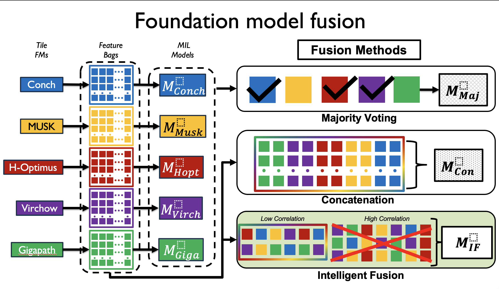
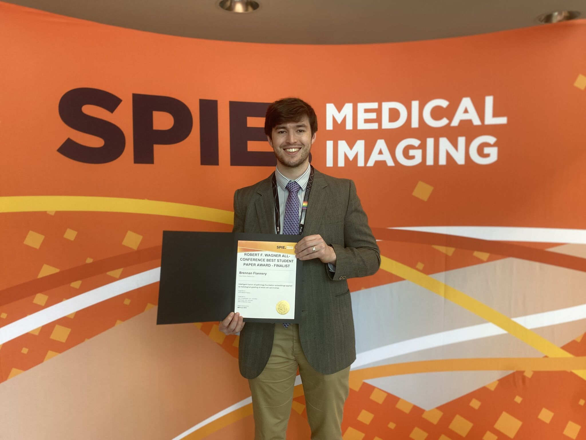
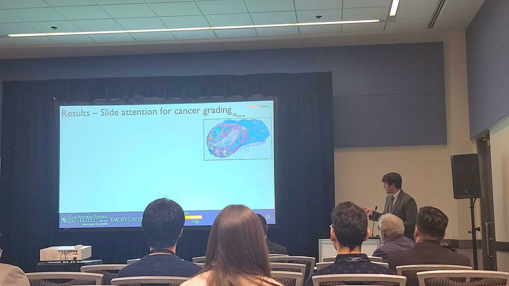
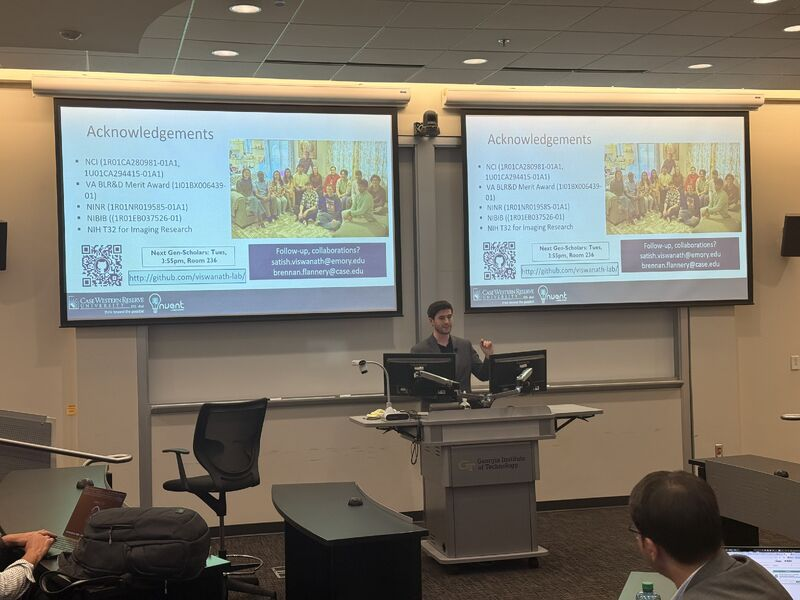
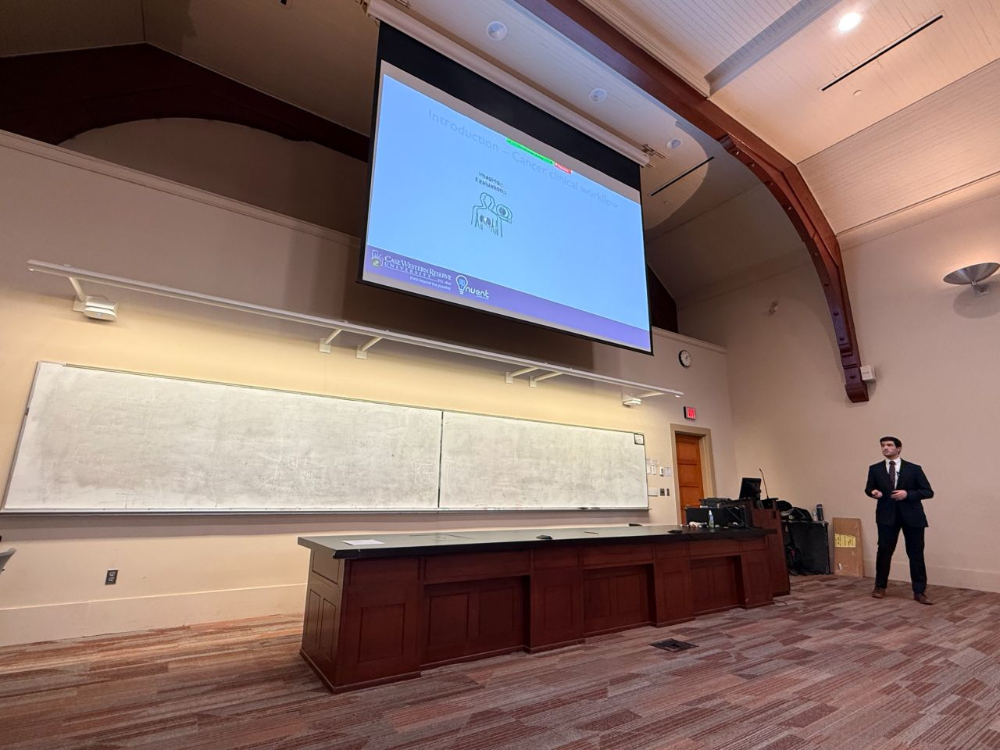

Gallery
Research & Presentations
Selected presentations, conference moments, and research visualizations. Hover to pause · Click to enlarge.






AI Scientist · Medical Imaging · Computational Oncology
Building next-generation AI systems that translate complex imaging data — from radiology and digital pathology to genomics — into actionable clinical insight. My work spans foundation model development, multimodal learning, and survival analysis for cancer care.
I am a Postdoctoral Fellow in the Viswanath Lab at Emory University, where I develop multimodal AI architectures that fuse radiology, digital pathology, and genomic data for oncology applications. I collaborate directly with clinicians at Children's Hospital of Atlanta to build translatable AI tools.
My PhD at Case Western Reserve University (4.0 GPA, 2025) focused on deep learning for cancer survival stratification across prostate, kidney, and rectal cancers — spanning CT imaging, whole-slide pathology, and multi-institutional validation.
I also consult as a Medical Image Analysis expert at ThetaTech AI, designing deployable AI workflows using nnUNet, YOLO, and LLM-assisted pipelines on cloud environments. I serve on the Radiology: Imaging Cancer Trainee Editorial Board and host the journal's podcast.
Full curriculum vitae available on request, or view my complete publication record on Google Scholar.
Peer-reviewed articles, conference presentations, and posters across radiology, digital pathology, and computational oncology.
Selected presentations, conference moments, and research visualizations. Hover to pause · Click to enlarge.





Open to research collaborations, consulting inquiries, and speaking opportunities in AI for medical imaging and computational oncology.
Direct email: brennanflanneryphd@gmail.com